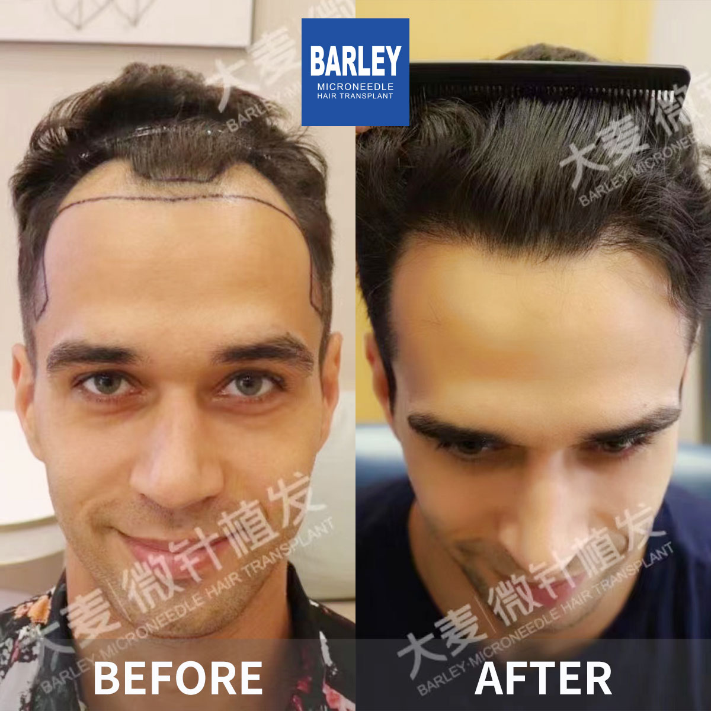
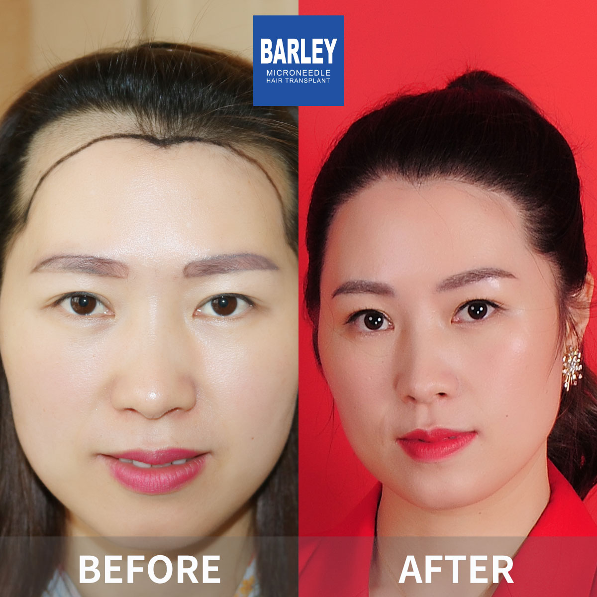
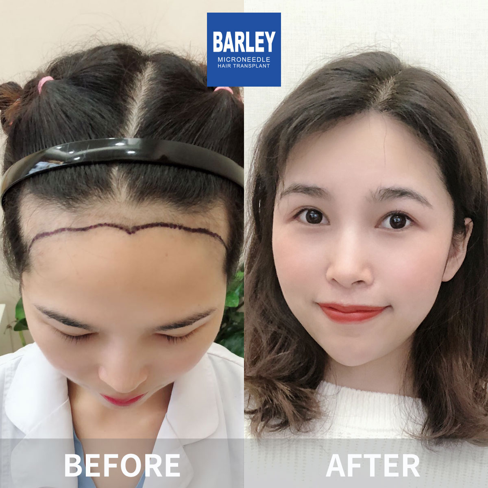
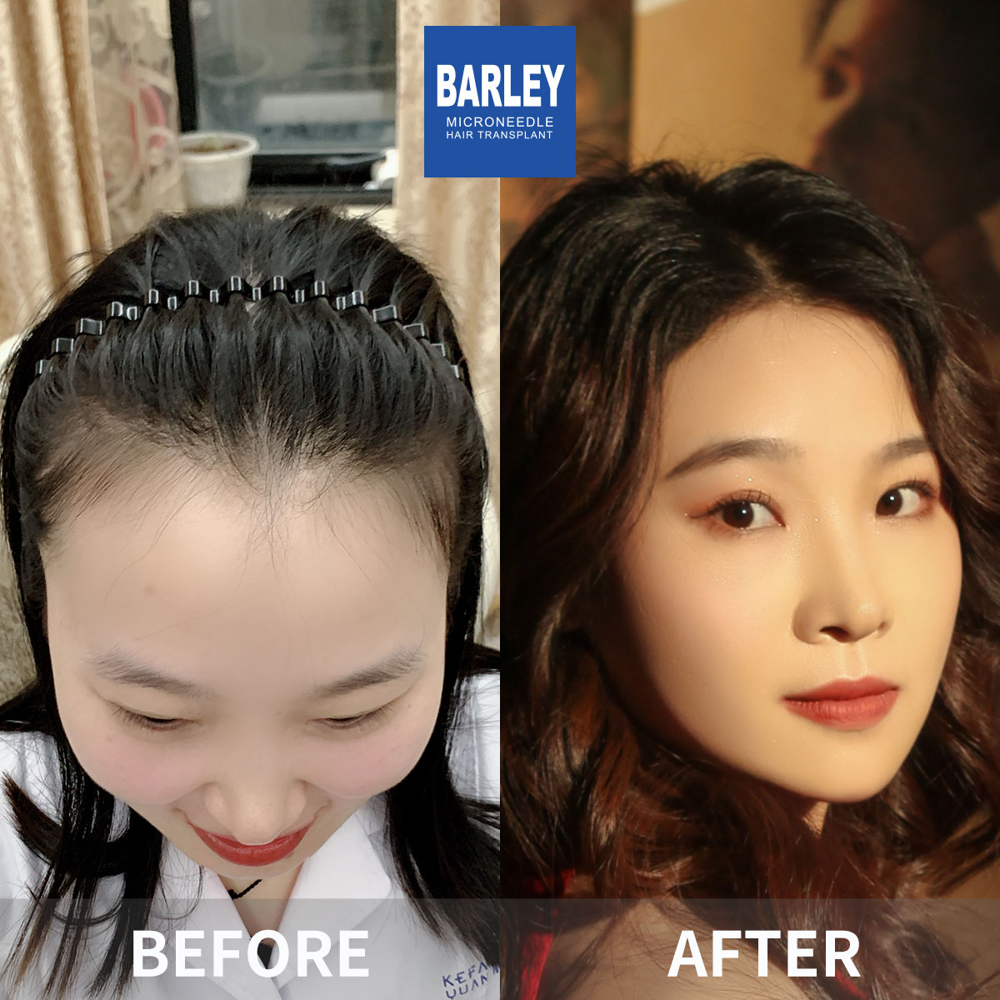
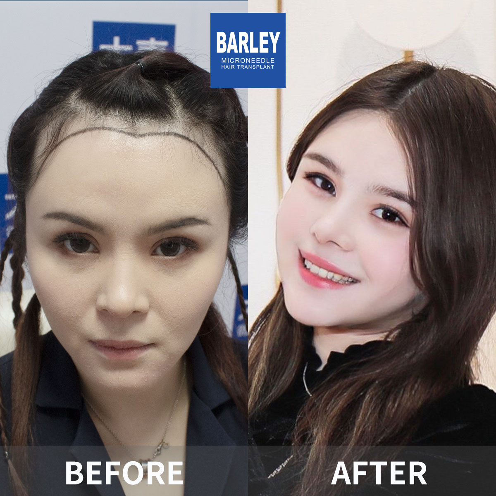

Browse over 100 authentic patient cases and find results that match your own hair loss pattern















The impact of over 18 years of clinical excellence in hair restoration
Every transformation tells the story of a patient who took back control of their confidence
Every image in this gallery belongs to a real Barley patient. No stock photography, no digital retouching, no camera tricks — just honest before-and-after documentation you can trust.
Each hairline is custom-designed to complement the patient's face shape, age, and ethnic features. Single-hair grafts at the frontal edge create a soft, irregular pattern that looks completely natural.
Carefully harvested healthy follicles, processed under cold-chain conditions and implanted with precision. The result: uniformly thick growth that lasts a lifetime — typically from a single procedure.
Patented technology and decades of expertise that deliver consistently superior outcomes
Micro-incisions mean less trauma, faster recovery, and a more natural finish
Cold-chain preservation ensures nearly every transplanted follicle takes root
Each graft placed at the exact angle and direction of natural hair growth
Nearly two decades of proven results you can verify in our gallery
Real patients, real transformations — captured after their procedures

Posing with our medical team after successful procedure

Celebrating fantastic results with our doctors

Another satisfied patient shares their joy

Patient with our specialist before discharge

Happy patient with Dr. Chen post-treatment

Excited patient showing their new look

Patient delighted with their transformation

Patient starting fresh with amazing results
Hear from our satisfied patients around the world
"I spent hours scrolling through the before-and-after gallery on this page looking for cases similar to mine. My result now belongs right up there — the density and natural look are better than I imagined. The photos don't lie, and neither do I."
"The category filters on this page helped me find women's cases that matched my thinning pattern. Seeing real results from other women gave me the courage to go ahead. My own before-and-after photos now tell the same incredible story."
"The men's baldness category showed me that even Norwood 6 cases can be transformed. I was at a Norwood 4 and figured if they could handle those, mine would be straightforward. Twelve months later, I look in the mirror and still can't believe it's the same head."
"What convinced me was that every photo here is unretouched and unfiltered. Too many clinics use Photoshop or angle tricks. Barley's gallery is honest — and my result matches exactly what these photos promised. No surprises, just genuine quality."
"The beard transplant section on this gallery is what caught my attention first. I had a large patch on my left cheek that never grew. The before-and-after photos showed exactly the kind of seamless blending I needed, and the surgeon delivered precisely that."
"I compared this gallery with five other clinics before making my decision. Barley's cases consistently showed better hairline design, higher density, and more natural growth angles. My own results confirm everything these photos promised — I'm living proof."
Experience our modern and comfortable facilities

Private and professional

Comfortable post-op space

Welcoming entrance
Our state-of-the-art facility

Relax in our premium lounge

Sterile and advanced
Answers to the questions our patients ask most often
Click to copy contact information
15810155700
+86 13730143529
hairtransplant@qq.com

Everyone's hair loss journey and solution are unique due to a variety of factors. Our hair restoration experts will assist you in determining the root cause and the best solution for your hair restoration plan. If you have any questions, please ask; we are happy to assist.